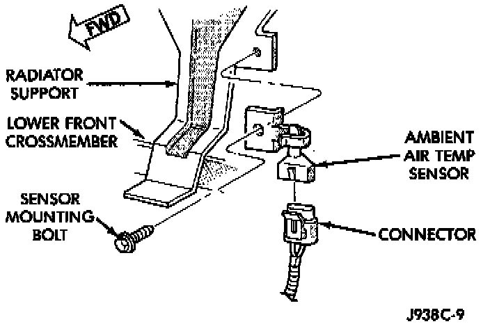

Ambient Temperature Sensor / Switch HVAC: Service and Repair
REMOVAL1. Disconnect and isolate the battery negative cable.
2. Remove the radiator grille unit.
Temperature Sensor Remove/Install:

3. Locate the temperature sensor, on the radiator support behind the grille.
4. Unplug the temperature sensor wire harness connector.
5. Remove the temperature sensor mounting bolt and remove the sensor.
6. Reverse the removal procedures to install.